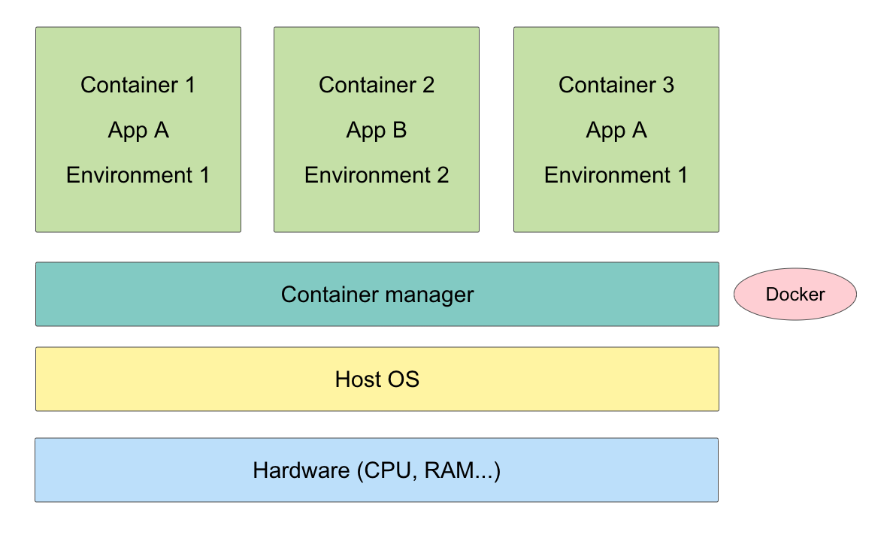

Docker Introduction
–
The Existence of docker
Before: 傳統 VM 因為需額外安裝 OS，導致啟動慢，佔較大記憶體問題
Solution: 以應用程式為核心虛擬化，取代傳統需要 OS 的虛擬化技術
What is virtualization?
虛擬化是模擬出一個環境，讓程式可在不同硬體上執行都以為是在同一個環境中執行
Sol: 避免在電腦上可運行的程式，移至其他電腦環境卻無法運行
虛擬化技術有兩種
- 系統層級的虛擬化技術 ex: VM (Virtual box)
- 作業層級的虛擬化技術 ex: Container (Docker)
VM vs Container
| VM | Container |
|---|---|
| 以 OS 為中心 | 以應用程式為中心 |
| 目標： 建立一個獨立的環境，方便在不同硬體中移動 | 目標： 改善 VM 因為需要裝 Guest OS 導致啟動慢，佔大記憶體問題 |
在 OS 上虛擬化，透過 container Manager 將一個 application 所需的程式碼、函式庫打包，建立資源控管機制隔離各 container，並分配 Host OS 上的系統資源
透過容器，application 不需再另外安裝 OS 也可以執行

Docker 3 元素
-
Image:
像模板，重複產生容器實體，透過 image，可以快速的產生執行 app 的 container
image 可由 dockerfile 建立 -
Container:
容器是 image 建立出來的執行實例，每個 container 都是分開、隔離的 -
Repository:
集中存放 image 的地方